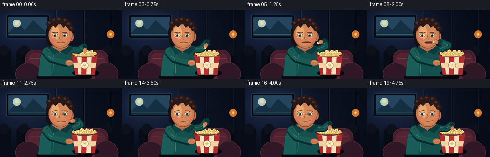
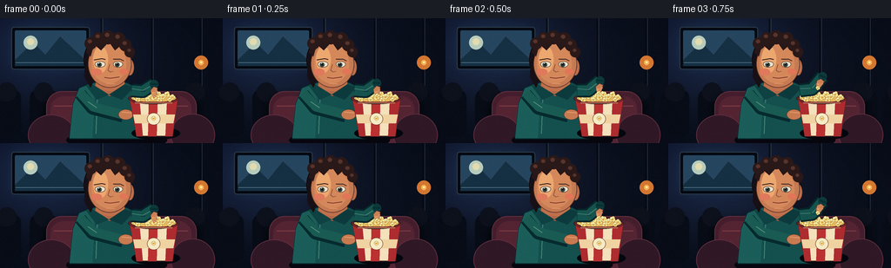

CODING AGENTS AS PIXEL WORLD MODELS
traex/GPT-5.6-Sol · motion_rationality_0021
点击播放 · 原生 RGB 像素
逐轮保存的候选
回放视频、检查图与代码变化。
每份候选均可单独播放。实际图片检查记录在下方工具轨迹中。
候选 01播放与检查图
点击播放 · 原生 RGB 像素


展开代码变化
--- 上一保存版本
+++ 本次保存版本
@@ -0,0 +1,370 @@
+from pathlib import Path
+import math
+
+import numpy as np
+from PIL import Image, ImageDraw, ImageFilter
+
+import artifact_io
+
+
+ROOT = Path(__file__).resolve().parent
+W, H, N = 256, 144, 20
+S = 4
+
+
+def ease(x):
+ x = max(0.0, min(1.0, x))
+ return x * x * (3.0 - 2.0 * x)
+
+
+def mix(a, b, t):
+ return a + (b - a) * t
+
+
+def bezier(a, b, c, t):
+ q = 1.0 - t
+ return (q*q*a[0] + 2*q*t*b[0] + t*t*c[0],
+ q*q*a[1] + 2*q*t*b[1] + t*t*c[1])
+
+
+def P(points):
+ return [(int(round(x*S)), int(round(y*S))) for x, y in points]
+
+
+def B(box):
+ return tuple(int(round(v*S)) for v in box)
+
+
+def ellipse(d, box, fill, outline=None, width=1):
+ d.ellipse(B(box), fill=fill, outline=outline, width=max(1, int(width*S)))
+
+
+def polygon(d, points, fill, outline=None, width=1):
+ pts = P(points)
+ d.polygon(pts, fill=fill)
+ if outline:
+ d.line(pts + [pts[0]], fill=outline, width=max(1, int(width*S)), joint="curve")
+
+
+def line(d, points, fill, width=1, joint="curve"):
+ d.line(P(points), fill=fill, width=max(1, int(width*S)), joint=joint)
+
+
+def rr(d, box, radius, fill, outline=None, width=1):
+ d.rounded_rectangle(B(box), radius=int(radius*S), fill=fill, outline=outline,
+ width=max(1, int(width*S)))
+
+
+def kernel(d, x, y, scale=1.0, angle=0.0, outline=(126, 85, 31, 255)):
+ """A recognizable popped kernel made from four irregular lobes."""
+ ca, sa = math.cos(angle), math.sin(angle)
+ offsets = [(-1.7, -0.4, 2.1), (1.4, -0.8, 2.0),
+ (-0.6, -2.0, 1.8), (0.3, 1.1, 2.2)]
+ for ox, oy, r in offsets:
+ rx, ry = ox*ca-oy*sa, ox*sa+oy*ca
+ ellipse(d, (x+(rx-r)*scale, y+(ry-r)*scale,
+ x+(rx+r)*scale, y+(ry+r)*scale),
+ (255, 239, 159, 255), outline, .45)
+ ellipse(d, (x-1.0*scale, y-0.4*scale, x+1.0*scale, y+1.5*scale),
+ (220, 156, 54, 255))
+ ellipse(d, (x-1.5*scale, y-2.5*scale, x-.3*scale, y-1.4*scale),
+ (255, 252, 211, 230))
+
+
+def make_background(frame_index):
+ hs, ws = H*S, W*S
+ yy, xx = np.mgrid[0:hs, 0:ws]
+ # Deep cinema blue with a soft screen glow from the upper left.
+ y = yy / S
+ x = xx / S
+ glow = np.exp(-(((x-49)/86)**2 + ((y-34)/59)**2))
+ vignette = np.clip(((x-W/2)/(W*.73))**2 + ((y-H/2)/(H*.88))**2, 0, 1)
+ base = np.zeros((hs, ws, 3), dtype=np.float32)
+ base[..., 0] = 11 + 16*glow - 5*vignette
+ base[..., 1] = 16 + 25*glow - 6*vignette
+ base[..., 2] = 29 + 43*glow - 7*vignette
+ # Very subtle projector shimmer, without introducing camera motion.
+ base += 0.8 * math.sin(frame_index * .52)
+ return Image.fromarray(np.uint8(np.clip(base, 0, 255)), "RGB").convert("RGBA")
+
+
+def draw_background(im, i):
+ d = ImageDraw.Draw(im, "RGBA")
+ # Recessed cinema screen and its soft halo.
+ glow = Image.new("RGBA", im.size, (0, 0, 0, 0))
+ gd = ImageDraw.Draw(glow, "RGBA")
+ rr(gd, (11, 8, 105, 61), 4, (91, 151, 197, 35))
+ glow = glow.filter(ImageFilter.GaussianBlur(7*S))
+ im.alpha_composite(glow)
+ d = ImageDraw.Draw(im, "RGBA")
+ rr(d, (13, 10, 103, 59), 3, (5, 9, 17, 255), (43, 59, 73, 255), 1)
+ rr(d, (17, 14, 99, 55), 1.5, (38, 70, 96, 255))
+ # Abstract, low-contrast movie image.
+ polygon(d, [(17, 48), (38, 28), (52, 42), (69, 21), (99, 49), (99, 55), (17, 55)],
+ (22, 48, 67, 255))
+ ellipse(d, (27, 20, 43, 36), (183, 204, 189, 100))
+ ellipse(d, (31, 23, 39, 31), (226, 220, 177, 80))
+ line(d, [(18, 51), (99, 51)], (107, 152, 176, 65), .7)
+
+ # Wall panels and two small aisle lights.
+ for x in (116, 174, 230):
+ line(d, [(x, 0), (x, 91)], (4, 8, 17, 90), 1)
+ line(d, [(x+2, 0), (x+2, 88)], (57, 67, 82, 35), .5)
+ for x in (119, 231):
+ ellipse(d, (x-8, 43, x+8, 59), (211, 119, 49, 15))
+ ellipse(d, (x-3, 48, x+3, 54), (244, 177, 84, 95))
+ ellipse(d, (x-1.2, 49.5, x+1.2, 52), (255, 229, 156, 230))
+
+ # Distant seat silhouettes create depth.
+ for x in (-8, 34, 208, 247):
+ rr(d, (x, 82, x+32, 137), 10, (8, 12, 22, 225))
+ ellipse(d, (x+5, 74, x+27, 96), (12, 17, 28, 255))
+
+ # Foreground plush cinema chair.
+ shadow = Image.new("RGBA", im.size, (0, 0, 0, 0))
+ sd = ImageDraw.Draw(shadow, "RGBA")
+ rr(sd, (50, 88, 229, 157), 19, (0, 0, 0, 125))
+ shadow = shadow.filter(ImageFilter.GaussianBlur(4*S))
+ im.alpha_composite(shadow)
+ d = ImageDraw.Draw(im, "RGBA")
+ rr(d, (53, 84, 226, 154), 18, (69, 30, 45, 255), (96, 46, 60, 255), 1)
+ rr(d, (58, 90, 220, 151), 15, (84, 36, 51, 255))
+ line(d, [(62, 101), (216, 101)], (128, 61, 70, 110), 1)
+ ellipse(d, (32, 111, 86, 158), (48, 24, 39, 255), (92, 44, 59, 255), 1)
+ ellipse(d, (196, 110, 247, 159), (48, 24, 39, 255), (92, 44, 59, 255), 1)
+
+
+def draw_person_base(im, i, mouth_open, chew):
+ d = ImageDraw.Draw(im, "RGBA")
+ # Grounded contact shadow.
+ ellipse(d, (76, 130, 192, 151), (8, 7, 16, 120))
+
+ # Torso: rich teal pullover, with subtle breathing motion.
+ breath = .45 * math.sin(i * math.pi / 7)
+ polygon(d, [(91, 80), (106, 74), (145, 74), (161, 82),
+ (169, 139), (80, 139), (84, 99)],
+ (20, 80, 78, 255), (8, 43, 47, 255), 1)
+ polygon(d, [(91, 81), (109, 75), (106, 138), (80, 138), (84, 99)],
+ (27, 94, 89, 255))
+ line(d, [(112, 81), (110, 133)], (70, 133, 121, 75), 1)
+ line(d, [(151, 83), (157, 131)], (5, 46, 49, 95), 1.1)
+ # Neck and collar.
+ polygon(d, [(112, 67), (141, 67), (143, 82+breath), (126, 90), (108, 81+breath)],
+ (177, 104, 69, 255), (92, 52, 46, 255), .7)
+ ellipse(d, (110, 65, 143, 84), (190, 113, 75, 255))
+ polygon(d, [(106, 76), (125, 88), (111, 94), (99, 78)], (15, 66, 67, 255))
+ polygon(d, [(143, 76), (125, 88), (140, 94), (154, 79)], (13, 59, 61, 255))
+
+ # Hair mass behind the face.
+ ellipse(d, (96, 18, 153, 78), (31, 20, 22, 255), (13, 11, 17, 255), 1)
+ polygon(d, [(98, 39), (97, 68), (104, 80), (110, 67), (108, 37)],
+ (24, 16, 20, 255))
+ # Ear behind cheek.
+ ellipse(d, (144, 47, 154, 66), (190, 111, 74, 255), (103, 57, 47, 255), .7)
+ line(d, [(149, 52), (151, 56), (148, 60)], (122, 66, 52, 190), .8)
+
+ # Face with layered warm highlights.
+ ellipse(d, (101, 25, 151, 80 + chew*.35), (198, 123, 82, 255), (91, 50, 43, 255), .8)
+ ellipse(d, (105, 30, 145, 75), (213, 137, 91, 150))
+ ellipse(d, (107, 32, 124, 63), (236, 168, 111, 65))
+ # Hairline and loose curls.
+ polygon(d, [(99, 39), (103, 28), (115, 20), (134, 21), (148, 31),
+ (153, 46), (145, 42), (139, 31), (132, 37), (125, 27),
+ (116, 37), (108, 30), (104, 44)],
+ (39, 24, 25, 255))
+ for x, y, r in [(104,29,7),(113,23,7),(124,22,8),(136,24,8),(144,31,7),(149,39,6)]:
+ ellipse(d, (x-r, y-r, x+r, y+r), (42, 25, 25, 255))
+ ellipse(d, (x-r*.45, y-r*.65, x+r*.2, y-r*.05), (88, 52, 42, 90))
+
+ # Brows, eyes looking toward the off-screen movie.
+ line(d, [(108, 48), (117, 46.5), (121, 47.5)], (61, 35, 32, 255), 1.25)
+ line(d, [(130, 47), (138, 47), (142, 49)], (61, 35, 32, 255), 1.2)
+ blink = i in (15,)
+ if blink:
+ line(d, [(110, 52), (116, 53), (120, 52)], (50, 32, 30, 255), 1)
+ line(d, [(131, 52.5), (136, 53.2), (140, 52.5)], (50, 32, 30, 255), 1)
+ else:
+ ellipse(d, (109, 49.5, 121, 56.5), (239, 226, 204, 255), (69, 42, 36, 255), .65)
+ ellipse(d, (130, 49.5, 141, 56.4), (239, 226, 204, 255), (69, 42, 36, 255), .65)
+ ellipse(d, (111.5, 51, 116.8, 56), (55, 69, 64, 255))
+ ellipse(d, (132, 51, 137.2, 56), (55, 69, 64, 255))
+ ellipse(d, (113.2, 52.1, 115.1, 54.5), (10, 17, 19, 255))
+ ellipse(d, (133.6, 52.1, 135.5, 54.5), (10, 17, 19, 255))
+ ellipse(d, (113, 51.4, 114, 52.3), (255, 255, 245, 235))
+ ellipse(d, (133.4, 51.4, 134.4, 52.3), (255, 255, 245, 235))
+ # Nose and cheek accents.
+ line(d, [(126, 53), (124, 60), (127, 62), (130, 61)], (132, 72, 56, 175), .8)
+ ellipse(d, (105, 58, 117, 66), (225, 121, 92, 38))
+ ellipse(d, (137, 58, 147, 65), (226, 118, 88, 48))
+ # Mouth clearly opens to receive the kernel, then compresses while chewing.
+ my = 68.0 + chew*.6
+ if mouth_open > 1.0:
+ ellipse(d, (119.5, my-mouth_open*.37, 137.8, my+mouth_open*.48),
+ (77, 30, 32, 255), (91, 43, 41, 255), .7)
+ # Upper teeth and tongue only when the mouth is substantially open.
+ if mouth_open > 3:
+ polygon(d, [(121, my-mouth_open*.24), (136, my-mouth_open*.18),
+ (135, my-.1), (122, my-.35)], (244, 223, 197, 235))
+ ellipse(d, (123, my+1.1, 135.5, my+mouth_open*.43), (159, 62, 61, 220))
+ else:
+ line(d, [(120, my), (126, my+1.0), (132, my+.35), (137, my-.4)],
+ (112, 45, 46, 255), 1.15)
+ line(d, [(123, my+2), (129, my+2.5), (134, my+1.5)],
+ (231, 144, 120, 120), .55)
+ # Small chin highlight.
+ line(d, [(122, 75+chew*.4), (132, 75.5+chew*.4)], (236, 161, 112, 70), .8)
+
+
+def draw_left_arm_and_bucket(im):
+ d = ImageDraw.Draw(im, "RGBA")
+ # Left sleeve and hand support the tub, anchoring it physically.
+ line(d, [(92, 87), (106, 104), (141, 113)], (7, 43, 47, 255), 14)
+ line(d, [(92, 86), (107, 102), (141, 111)], (26, 91, 84, 255), 11)
+ line(d, [(101, 96), (111, 103)], (76, 139, 122, 90), 1)
+ ellipse(d, (136, 105, 153, 117), (199, 123, 81, 255), (100, 55, 44, 255), .7)
+ line(d, [(140, 108), (151, 109)], (236, 163, 109, 110), 1)
+
+ # Bucket shadow.
+ ellipse(d, (151, 125, 207, 140), (5, 7, 14, 120))
+ # Trapezoidal striped popcorn tub.
+ tub = [(149, 91), (204, 91), (198, 136), (157, 136)]
+ polygon(d, tub, (244, 226, 189, 255), (74, 40, 38, 255), 1)
+ # Alternating red panels clipped naturally by the tapered geometry.
+ polygon(d, [(149, 92), (160, 92), (164, 136), (157, 136)], (174, 44, 47, 255))
+ polygon(d, [(171, 92), (181, 92), (180, 136), (170, 136)], (188, 49, 49, 255))
+ polygon(d, [(192, 92), (204, 92), (198, 136), (190, 136)], (174, 44, 47, 255))
+ polygon(d, [(153, 111), (201, 111), (199, 121), (155, 121)], (240, 211, 162, 210))
+ # Simple emblem that reads visually as a popcorn badge, not tiny text.
+ ellipse(d, (169, 109, 184, 123), (248, 235, 197, 255), (112, 53, 41, 255), .6)
+ kernel(d, 176.5, 115.5, .72, .2)
+ # Rim and mound.
+ ellipse(d, (147, 86, 205, 99), (91, 37, 35, 255), (52, 29, 30, 255), 1)
+ ellipse(d, (151, 87.5, 202, 96.5), (231, 187, 93, 255))
+ fixed = [(155,91,1.05,.1),(161,88.5,.9,.7),(166.5,91,1.0,-.5),
+ (171,87.5,1.1,.2),(176.5,91,1.0,.8),(181.5,87.7,1.05,-.2),
+ (187,90.5,1.0,.5),(192,87.7,.95,-.7),(198,91,.9,.4),
+ (158.5,94,.85,-.3),(169.5,94,.9,.6),(183.5,94,.9,-.4),(195,94,.8,.2)]
+ for x, y, s, a in fixed:
+ kernel(d, x, y, s, a)
+ # Front rim lip gives the container thickness.
+ line(d, [(149, 94), (155, 97), (197, 97), (204, 94)], (118, 37, 38, 255), 2)
+ line(d, [(155, 97.5), (198, 97.5)], (255, 224, 161, 180), .7)
+
+
+def hand_state(i):
+ """Return fingertip, pointing angle and whether a kernel is held."""
+ start, end = (177.0, 88.0), (138.0, 67.0)
+ if i <= 1:
+ # Dip and pinch within the mound.
+ tip = (177.0, 89.2 - 1.2*i)
+ angle = math.pi/2
+ held = i >= 1
+ elif i <= 7:
+ t = ease((i-1)/6)
+ tip = bezier(start, (171, 69), end, t)
+ angle = mix(math.pi/2, math.pi, t)
+ held = True
+ elif i <= 9:
+ tip = (138.0 + .3*(i-7), 67.0)
+ angle = math.pi
+ held = i == 8 # disappears exactly as it reaches the lips
+ elif i <= 17:
+ t = ease((i-9)/8)
+ tip = bezier((138.6, 67.0), (170, 73), start, t)
+ angle = mix(math.pi, math.pi/2, t)
+ held = False
+ else:
+ tip = (177.0, 88.0 + .8*math.sin((i-17)*1.1))
+ angle = math.pi/2
+ held = i == 19
+ return tip, angle, held
+
+
+def draw_active_arm(im, i):
+ d = ImageDraw.Draw(im, "RGBA")
+ tip, angle, held = hand_state(i)
+ direction = np.array([math.cos(angle), math.sin(angle)])
+ normal = np.array([-direction[1], direction[0]])
+ center = np.array(tip) - direction*6.1
+ wrist = center - direction*7.2
+ shoulder = np.array((151.5, 83.0))
+ # The elbow remains outside the torso and flexes as the hand rises.
+ if i <= 7:
+ q = ease(max(0, i-1)/6)
+ elif i <= 9:
+ q = 1.0
+ elif i <= 17:
+ q = 1.0 - ease((i-9)/8)
+ else:
+ q = 0.0
+ elbow = np.array((164.0 + 5.0*q, 84.0 - 10.0*q))
+
+ # Dark contour, then lit sleeve. Rounded joints preserve anatomy.
+ line(d, [shoulder, elbow, wrist], (6, 39, 43, 255), 16)
+ line(d, [shoulder, elbow, wrist], (22, 83, 78, 255), 12)
+ line(d, [shoulder+(0,-2), elbow+(0,-1), wrist], (66, 129, 114, 78), 1.2)
+ ellipse(d, (wrist[0]-5, wrist[1]-5, wrist[0]+5, wrist[1]+5), (13, 58, 59, 255))
+
+ # Palm with fingers aligned to the action direction.
+ palm = [center + normal*4.2, center + direction*4 + normal*3.5,
+ center + direction*5 - normal*3.0, center - direction*2.5 - normal*4.1,
+ center - direction*4 + normal*.5]
+ polygon(d, palm, (203, 128, 84, 255), (94, 51, 42, 255), .65)
+ # Three pinching fingers converge near the kernel.
+ for off, length in [(-2.1, 6.5), (0.0, 7.2), (2.1, 6.0)]:
+ a = center + normal*off + direction*2
+ b = center + normal*(off*.55) + direction*length
+ line(d, [a, b], (224, 151, 100, 255), 2.25)
+ ellipse(d, (b[0]-1.15, b[1]-1.15, b[0]+1.15, b[1]+1.15),
+ (231, 158, 105, 255), (112, 60, 47, 180), .35)
+ # Thumb crosses toward index finger.
+ thumb_a = center - normal*3.0
+ thumb_b = center + direction*4.4 - normal*.5
+ line(d, [thumb_a, thumb_b], (215, 138, 91, 255), 2.5)
+ # Cuff and fabric crease.
+ line(d, [wrist-normal*4.3, wrist+normal*4.3], (8, 47, 50, 255), 2)
+ line(d, [elbow-normal*3, elbow+normal*2], (5, 46, 49, 110), .8)
+
+ if held:
+ kp = np.array(tip) + direction*1.0
+ kernel(d, kp[0], kp[1], .68, angle+.25)
+
+
+def frame_params(i):
+ # Mouth anticipation and bite timing.
+ opens = {0: .3, 1: .3, 2: .5, 3: 1.0, 4: 2.4, 5: 3.8,
+ 6: 5.1, 7: 6.2, 8: 6.5, 9: 4.6, 10: 1.0}
+ mouth = opens.get(i, .45)
+ # Down-up jaw compression after the kernel disappears.
+ chew = 0.0
+ if 10 <= i <= 15:
+ chew = [1.0, 2.0, .5, 1.8, .3, 1.0][i-10]
+ return mouth, chew
+
+
+def render_frame(i):
+ im = make_background(i)
+ draw_background(im, i)
+ mouth, chew = frame_params(i)
+ draw_person_base(im, i, mouth, chew)
+ draw_left_arm_and_bucket(im)
+ draw_active_arm(im, i)
+
+ # A restrained cinematic grade and fine deterministic grain.
+ im = im.convert("RGB").resize((W, H), Image.Resampling.LANCZOS)
+ arr = np.asarray(im).astype(np.int16)
+ rng = np.random.default_rng(8300 + i)
+ grain = rng.normal(0, .65, (H, W, 1))
+ arr = np.clip(arr + grain, 0, 255).astype(np.uint8)
+ return arr
+
+
+def main():
+ frames = np.stack([render_frame(i) for i in range(N)], axis=0)
+ assert frames.shape == (20, 144, 256, 3)
+ assert frames.dtype == np.uint8
+ artifact_io.save(frames, ROOT)
+
+
+if __name__ == "__main__":
+ main()
可观测工具轨迹
实际执行的命令与返回图片。
命令 1exit 0
/bin/bash -lc "cat prompt.txt && printf '\\n--- GENERATION_RULES.md ---\\n' && cat GENERATION_RULES.md"
命令 2exit 0
/bin/bash -lc "cat task_spec.json && printf '\\n--- FILES ---\\n' && find . -maxdepth 2 -type f -printf '%p\\n' | sort"
命令 3exit 0
/bin/bash -lc "which ffmpeg || true; which python3 || true; python3 - <<'PY'
try:
import PIL; print('PIL',PIL.__version__)
except Exception as e: print('no PIL',e)
try:
import cv2; print('cv2',cv2.__version__)
except Exception as e: print('no cv2',e)
try:
import numpy; print('numpy',numpy.__version__)
except Exception as e: print('no numpy',e)
PY"命令 4exit 0
/bin/bash -lc 'cat artifact_io.py'
命令 5exit 0
/bin/bash -lc 'python3 generate.py'
命令 6exit 0
/bin/bash -lc "python3 - <<'PY'
from pathlib import Path
import numpy as np
from PIL import Image
p=Path('.')
z=np.load('pixels.npz')['pixels']
print('packed tensor',z.shape,z.dtype)
fs=sorted((p/'frames').glob('*.png'))
print('frame files',len(fs), Image.open(fs[0]).mode, Image.open(fs[0]).size)
a=np.stack([np.asarray(Image.open(f).convert('RGB')) for f in fs])
print('rgb',a.shape,a.dtype,'range',a.min(),a.max())
mad=np.abs(np.diff(a.astype(np.int16),axis=0)).mean(axis=(1,2,3))
changed=(np.diff(a.astype(np.int16),axis=0)"'!=0).any(axis=3).mean(axis=(1,2))
print('"'mean abs deltas:',np.round(mad,2).tolist())
print('changed fractions:',np.round(changed,3).tolist())
print('all adjacent distinct', bool(np.all(mad>0)))
# Verify packed values faithfully reproduce frame RGB.
unpack=np.stack([(z>>16)&255,(z>>8)&255,z&255],axis=-1).transpose(2,0,1,3).astype('uint8')
print('npz roundtrip',np.array_equal(a,unpack))
PY"命令 7exit 0
/bin/bash -lc 'ls -lh generate.py pixels.npz index.html inspection.png transition_check.png frames/00.png frames/19.png && git status --short 2>/dev/null || true'
命令 8exit 0
/bin/bash -lc "python3 -m py_compile generate.py && grep -o '\"width\":256,\"height\":144,\"frames\":20,\"fps\":4.0' index.html | head -1"
保存候选 1 份；完成命令 8 次；可验证图片返回 0 张。原始 API 响应与完整日志保留在本地。